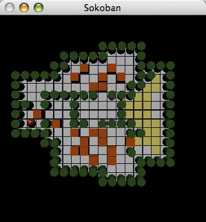

Ruby isn't the only good thing to come out of Japan. The computer game Sokoban, invented by Hiroyuki Imabayashi, was introduced by Thinking Rabbit of Takarazuka, Japan in 1982. This simple game of logic puzzles was an instant success. It won awards and spawned sequels. Over the years, Sokoban has been ported to a huge number of platforms. Fan support remains strong and many of those fans even produce new levels for the game.
This week's quiz is to implement the game of Sokoban with the interface of your choosing and any extra features you would like to have.
Sokoban (which translates to "Warehouse Man") has simple rules, which basically amount to push crates into their storage spots in the warehouse. The elements of the levels are simple: The "man", crates, walls, open floor, and storage. Different level designers use various symbols to represent these items in level data files. Here's one possible mix:
@ for the man
o for crates
# for walls
<space> for open floor
. for storage
Now because a man or a crate can also be on a storage space, we need special conditions to represent those setups:
* for crate on storage
+ for man on storage
Using this, we can build an extremely simple level:
#####
#.o@#
#####
This level is completely surrounded by walls, as all Sokoban levels must be. Walls are, of course, impassable. In the center we have from left to right: A storage space, a crate (on open floor), and the man (also on open floor).
(The original Sokoban levels were 19 x 16, but later levels have varied in size.)
The game is played by moving the man up, down, left and right. When the man moves towards a crate, he may push it along in front of him as long as there is no wall or second crate behind the one being pushed. A level is solved when all crates are on storage spaces.
Given those rules, we can solve our level above with a single move to the left, yielding:
#####
#*@ #
#####
That simple system can lead to some surprisingly complicated mind benders, but please don't take my word for it. Here are some levels to test your game engine and your logic skills:
(Note: These levels are Copyrighted by Thinking Rabbit. You may play them but not profit from them in any way.)
Be warned, Sokoban is extremely addictive!
Quiz Summary
Well, how far did you get? I'm stuck on level 28 myself.

As those of you who have now built Sokoban know, the game is quite trivial to implement. Here's a very brief solution from Dennis Ranke:
def initialize(level)
@level = level
end
def play
while count_free_crates > 0
printf "\n%s\n\n> ", self
c = gets
c.each_byte do |command|
case command
when ?w
move(0, -1)
when ?a
move(-1, 0)
when ?s
move(0, 1)
when ?d
move(1, 0)
when ?r
return false
end
end
end
printf "\n%s\nCongratulations, on to the next level!\n", self
return true
end
private
def move(dx, dy)
x, y = find_player
dest = self[x+dx, y+dy]
case dest
when ?#
return
when ?o, ?*
dest2 = self[x+dx*2, y+dy*2]
if dest2 == 32
self[x+dx*2, y+dy*2] = ?o
elsif dest2 == ?.
self[x+dx*2, y+dy*2] = ?*
else
return
end
dest = (dest == ?o) ? 32 : ?.
end
self[x+dx, y+dy] = (dest == 32) ? ?@ : ?+
self[x, y] = (self[x, y] == ?@) ? 32 : ?.
end
def count_free_crates
@level.scan(/o/).size
end
def find_player
pos = @level.index(/@|\+/)
return pos % 19, pos / 19
end
def [](x, y)
@level[x + y * 19]
end
def []=(x, y, v)
@level[x + y * 19] = v
end
def to_s
(0...16).map {|i| @level[i * 19, 19]}.join("\n")
end
end
levels = File.readlines('sokoban_levels.txt')
levels = levels.map {|line| line.chomp.ljust(19)}.join("\n")
levels = levels.split(/\n {19}\n/).map{|level| level.gsub(/\n/, '')}
levels.each do |level|
redo unless Level.new(level.ljust(19*16)).play
end
Dennis decided to keep the levels in their text format and lean on Ruby's text processing strengths. This probably doesn't make for the prettiest of solutions, but it is short.
Level.play() is the primary interface for the code above. It handles one level, start to finish, returning true if the level was solved and false if it was restarted. It checks for a level being solved by looping until Levels.count_free_crates() returns 0. That method simply scan()s for "o" characters, returning a count. When a player enters a move command, work is handed off to the game-play routine Level.move().
The first step to performing a move is to find the player. Level.find_player() uses a combination of index() and simple math to locate a "@" or "+" character. (Note: This is a weakness of Dennis' solution. It only works for levels 19 characters wide and smaller.) Once found, move() checks the square in front of the player. If it's a wall, it disallows the move and if it's open, the player moves. The special case is when there is a crate in front of the player. When found, move() looks farther forward to ensure that the path is clear and if it is, both crate and player are moved. All this testing and swapping is handled with Level.[]() and Level.[]=(), which function as expected.
For a more abstract OO solution, check out the code sent in by Dave Burt.
So, as I've said and we've now seen, implementing Sokoban is pretty easy stuff. Extra features weren't too popular, but some did allow for a way to restart levels. That is pretty critical in Sokoban, where you can easily get yourself stuck. Dave Burt's solution includes a debugging mode that allows you to feed the game engine pure Ruby. My solution also provided Undo, Save, and Load. I think a level editor and a solver would make interesting additions.
Let's talk about one more thing though. Interface. To a game, interface is critical. Dennis Ranke's and Dave Burt's games read line-oriented input, requiring you to push enter/return to send a move. While they do allow you to queue up a long line of moves, this tires my poor little fingers out, especially on involved levels.
That begs the question, why did they use this approach?
Portability, would be my guess. Reading a single character from a terminal interface can get tricky, depending on which operating system you are running on. Here's how I do it on Unix:
system "stty raw -echo"
STDIN.getc
ensure
system "stty -raw echo"
end
Here's one way you might try the same thing on Windows:
require "Win32API"
Win32API.new("crtdll", "_getch", [], "L").Call
end
If you want your game to run on both, you may need to write code to detect the platform and use the proper method. Here's one way you might accomplish that:
require "Win32API"
def read_char
Win32API.new("crtdll", "_getch", [], "L").Call
end
rescue LoadError
def read_char
system "stty raw -echo"
STDIN.getc
ensure
system "stty -raw echo"
end
end
That doesn't cover every platform, but I believe it will work with Windows and most Unix flavors (including Mac OS X). That may be enough for some purposes.
Other submissions dealt with this differently. G.Durga Prasad's solution used Curses. Curses is standard Ruby, but unfortunately not so standard in the Windows world. A great advantage to this approach was being able to use the arrow keys, which makes for the best interface, I think.
I believe Florian Gross also used the arrow keys, but his solution doesn't seem to support my platform. He used the Ruby/Gosu game library to build a graphical Sokoban.
Thomas Leitner provided another Curses solution in addition to one that requires FXRuby, a Ruby interface to the FOX GUI library. Thomas's submission is also a brilliant piece of AI, since it knew to tell me "You are the greatest player in history!!!"
My own solutions either relied on a Unix terminal or a Ruby/OpenGL library being installed.
Interface work can get neck deep in external dependancies pretty quick it seems. Since games are largely defined by their interface, that can make for some complex choices. Maybe we should hope for a Swing-like addition to the Ruby Standard Library sometime in the future.
My thanks to the game writers and game players.
Look for our second contributed quiz topic tomorrow morning, this time by Jamis Buck...